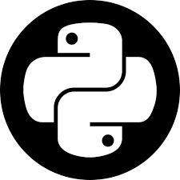

Sudheesh Srivastava
A curious mind trying to blend the elegance of physics with the precision of programming. As a doctoral student in physics with a knack for software-development, I navigate the realms of mathematics, software engineering and AI with inquisitive fascination. With experience in front-end development, Python applications, mathematical modeling, and data science, I bring a unique mix of analytical prowess and creative flair to every project. My interdisciplinary sensibilities keep my motivations driven and curiosity humble.
Experience
Adjunct Lecturer
Lab instructor for an undergraduate course. Taught various experiments covering basics of introductory physics. Helped improve the avearage performance of batch with constructive feedback.
Research Assistant
Research intern at the physics department. Investigated conceptual signatures for understanding the proposed hypothesis. Contributed numerical calculations and visualisations, using python, to validate suggested theoretical direction. Optimised and improved the computational codebase to reduce simulation time.
Software Engineer
Software developer in company's NAUKRI-RMS vertical. Contributed as a front-end developer. Primarily worked with REACT.JS to create various components for user-interface in the application service, following an AGILE methodology.
Education
Graduate Center, City University of New York, New York
GPA: 3.6 / 4.0
Investigated physics of condensed systems, with a focus on active-fluids and light-matter-hybrids (polaritons). Carried out computational experiments, numerical calculations and analytical studies to understand the conceptual conseqeunces of introducing complexity of 'broken-parity' (or presence of activity) in fluids. Examples of systems with such emergent behaviour include fluids description of bacteria fluids, ferro-fluids etc. Worked out a design protocol to experimentally create a 'polartion' based quantum-simulator for pedagogical condensed matter models.
Indian Institute of Technology , BHU , Varanasi
GPA: 7.9 / 10.0
Integarted undergraduate and masters program at intersection of engineering and applied physics. Improved understanding of the physical underpinning across various domains of engineering. Focused on theoretical study of nanomechanical quantum sensors.
Projects & Skills
Physics
- Mapping parameter dependence for tunneling and entanglement dynamics in the quatum kicked top.
- Generation of coherence in an exactly solvable nonlinear nanomechanical system.
- Parity breaking effects in nonlinear fluid flows and dielectric chains.
- Polariton (microscale photon-matter system) based analog quantum simulators for condensed matter models.
Math & Data-Science
- Complexity in dynamical systems
- Attractors in parameter space
- Critical organisation in sandpiles
- Segmentation analysis for downstream hypothesis testing.
- Feature selection using correlations for A/B testing.
- Stock trend analysis and Portfolio optimisation strategies.
Software & Machine-Learning
- Web-scraping and REST based server & client interfacing applications
- LLM based RAG pipelines
- Chat with a philosopher: Using FAISS vector-database of high quality data, and an 'in-database' finetuned version of Llama2-7B to power a chatbot.
- Quiz and Feedback genertor: (prototype) Use LLMs to generate a quiz and get feedback on answers.
- Web-based document summariser. Check it out HERE!
- A proof-of-concept Multi-modal chatbot assistant on Android
- Random-Forest classifier model for the task of stock-trend prediction. Optimised the precision in backtesting by learning volatility dynamics.
- Binary-classifaction on IRIS dataset using Quantum-Computing circuits. Using classical backpropagation to learn the parameters for Quantum-gates, which on operating on IRIS dataset can classify accurately.
Skills
- Analytical: Nonlinear partial-differential equations, perturbative multi-scale analysis and stability characterisation
- Numerical: Finite-element and spectral solutions of PDEs, designing photonic cavities
- Technological: Python, SQL, Javascript, React.js, Qiskit, Selenium, FLASK, Heroku (brief familiarity), Langchain, Pytorch, Pandas
MORE INFORMATION IN STUFF
Interests
My training as a physics student has made me curious and enabled me to learn about understanding various aspects of hydrodynamics, dynamical systems, topology and geometry. The interplay of these domains, in problems addressing turbulence,stability analysis, qualitative characterisation of dynamics (Hamiltonian physical dynamics) has been the focus of my theoretical work. More specifically how various fluids (and superfluids) evolve (nonlinearly) at different time & space scales, under action of various forces (like gravity, Coriollis, surface tension, odd-viscocity), and the physical consequences in the statistics of their associated observables. I have also learnt to appreciate the ingenuity of designing analog quantum-simulators, specifically on photonic based platforms like Polaritons.
Apart from thinking about condensed matter systems, I enjoy learning about different domains of mathematics, (for instance differential geometry, number theory and knot theory), and exploring various aspects of application and web development (specifically python based services).
How I thermalise :
In my relaxation phase , I could be found (no particular ordering):
- Spiraling down videolists about beautiful mathematical proofs
- Devouring short stories and dwelling on poems
- Browsing and appreciating paintings, artworks
- Trying to philosophise as much as my armchair permits
(Expanding the armchair as much as I can) - Adding new books to my to-read and old movies to my to-watch
- Occasionally taking a dive or kicking a ball, and once in a while hiking a trail
Stuff
Choose:
-

-

- 